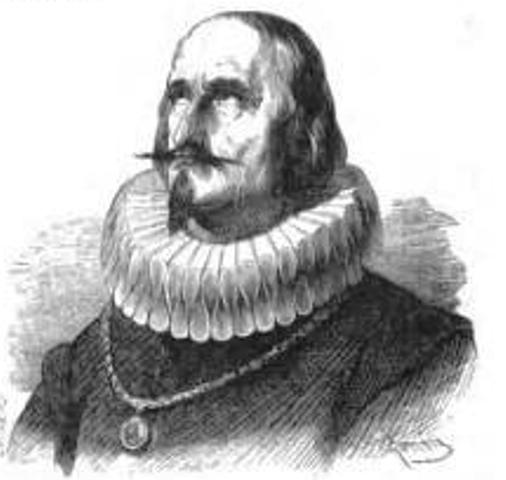

Martinetti e gli Aristotelici
«Questa deficienza della coltura della nostra borghesia rende possibili tanti fattori caratteristici della mentalità dei popoli semicolti; tra il resto, per esempio, il fiorire della pseudocoltura, della coltura superficiale e ciarlatanesca, che ha invaso la nostra vita. E questo è naturale. Là dove è diffuso un sincero e illuminato sentimento religioso, la falsa religiosità, cioè il clericalismo, non può trionfare: il clericalismo prospera soltanto dove e quando la religione è diventata una cosa morta. E così è della coltura intellettuale e delle sue degenerazioni.»

«VITA DI GALILEO» BERTOLT BRECHT
«GALILEO: Sovente mi accade di vedere dottori di ogni facoltà chiudere gli occhi davanti ai fatti e comportarsi come se nulla fosse. Mostro i miei rilievi e si sorride, pongo a disposizione il mio telescopio perché ognuno possa accertarsi, e si cita Aristotele. Lui non ce l’aveva il telescopio!»
Bertoldt Brecht(1898-1956), drammaturgo e regista tedesco, è considerato uno dei più influenti autori del teatro del ‘900. Il suo è un teatro politico: gli spettatori devono infatti riuscire a cogliere il messaggio che l’autore vuole diffondere e rifletterci sopra, senza lasciarsi condizionare dal legame emotivo con i personaggi.
 “Vita di Galileo”, testo teatrale ispirato alla vicenda umana e professionale di Galileo Galilei, viene pubblicato più volte durante e dopo la Seconda Guerra Mondiale. L’edizione definitiva contiene il messaggio politico fondamentale: Galilei qui incarna il paradigma dello scienziato, il quale non deve mai perdere la sua coscienza politica, perché le sue scoperte potrebbero essere utilizzate per finalità ambigue e politicamente oscure
“Vita di Galileo”, testo teatrale ispirato alla vicenda umana e professionale di Galileo Galilei, viene pubblicato più volte durante e dopo la Seconda Guerra Mondiale. L’edizione definitiva contiene il messaggio politico fondamentale: Galilei qui incarna il paradigma dello scienziato, il quale non deve mai perdere la sua coscienza politica, perché le sue scoperte potrebbero essere utilizzate per finalità ambigue e politicamente oscure
Da questo confronto emerge che molto spesso sono le autorità stesse a non consentire l’avanzamento della cultura e, specificamente nel caso di Galileo, della scienza. Quelle che dovrebbero essere le classi dominanti, invece di mostrarsi aperte al cambiamento, reso possibile anche e soprattutto dal progresso tecnologico, si rinchiudono nel sapere che già possiedono, dandolo per assolutamente certo ed escludendo completamente la possibilità che ci siano errori. Ne sono un esempio i fanatici di Aristotele citati dal Galileo brechtiano, che alimentano la falsa cultura (proprio come, per tornare a Martinetti, chi imbalsama la religione crea solo falsa religiosità).
La anacronistica mentalità degli aristotelici seicenteschi è incarnata da don Ferrante, celebre figura dei Promessi Sposi, intellettuale innamorato della cultura antica in maniera ottusa, da vero e proprio erudito, sprezzante verso i contemporanei, e fermamente convinto di possedere già tutto il sapere necessario, pervenuto all’uomo grazie alla filosofia antica.
«PROMESSI SPOSI» ALESSANDRO MANZONI, CAP. XXVII
 «[...] diceva don Ferrante; il quale, riconoscendo volentieri la superiorità degli antichi, non poteva però soffrire quel non voler dar ragione a’ moderni, anche dove l’hanno chiara che la vedrebbe ognuno. [...] Dalla filosofia antica aveva imparato quanto poteva bastare, e n’andava di continuo imparando di più, dalla lettura di Diogene Laerzio. Siccome però que’ sistemi, per quanto sian belli, non si può adottarli tutti; e, a voler esser filosofo, bisogna scegliere un autore, così don Ferrante aveva scelto Aristotile, il quale, come diceva lui, non è né antico né moderno; è il filosofo. Aveva anche varie opere de’ più savi e sottili seguaci di lui, tra i moderni: quelle de’ suoi impugnatori non aveva mai voluto leggerle, per non buttar via il tempo, diceva: nè comprarle, per non buttar via i denari.»